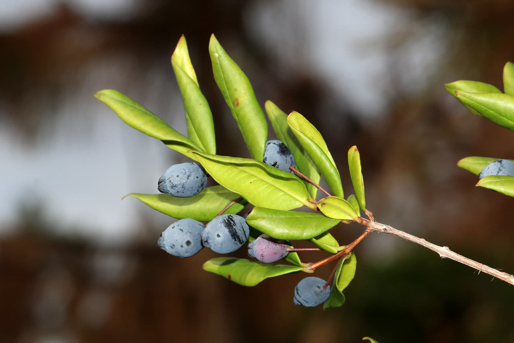
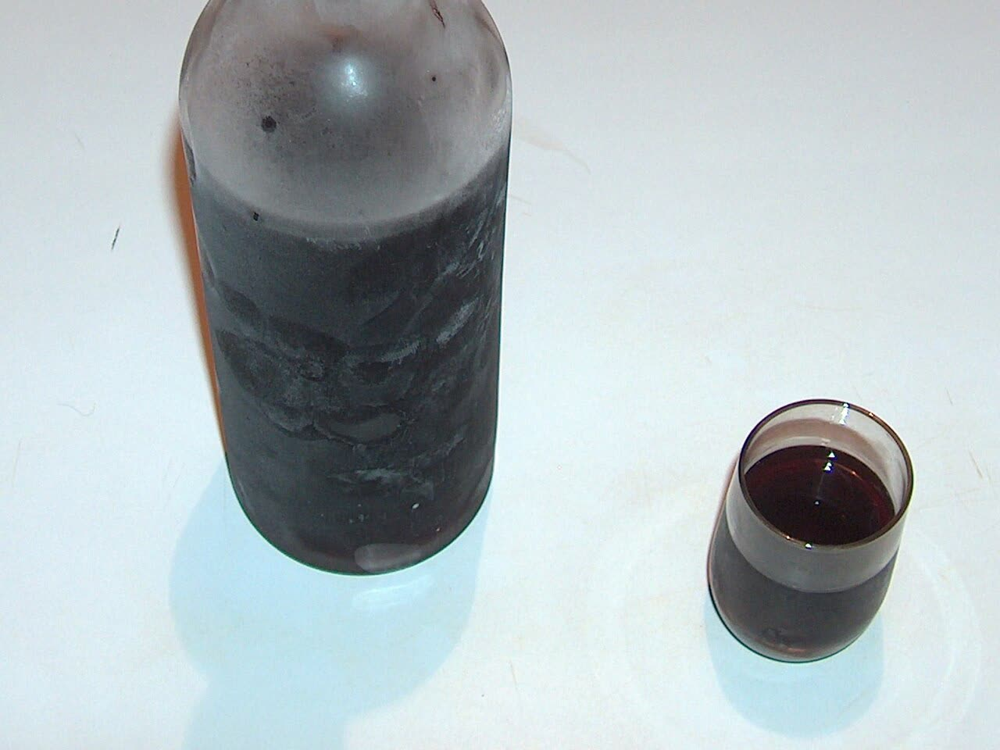

Die besten Liköre Sardiniens
Kaum ein Getränk steht so sehr für Sardinien wie ein Digestif zum Abschluss des Essens. Drei Namen sollte man sich merken.
Mirto – der Likör der Insel
Mirto wird aus den Beeren oder Blättern der auf Sardinien wild wachsenden Myrtenpflanze hergestellt und gehört seit Generationen zu jedem festlichen Essen. Es gibt zwei Varianten: Mirto Rosso, der klassische rote Likör aus den dunklen Beeren, mit fruchtigen, leicht bitteren Aromen; und Mirto Bianco, eine hellere, mildere Variante aus jungen Trieben und Blättern. Kommerziell populär wurde Mirto vor allem durch den Tourismus-Boom an der Costa Smeralda ab den 1970er-Jahren.

Foto: Ligurian Vascular Flora, CC BY 2.0 (Aufnahme aus Ligurien)
{kind=link}

Foto: Wikimedia Commons, CC BY-SA 3.0
{kind=link}

Foto: Pixabay, freie Lizenz
Fil'e Ferru – der klare Schnaps
Ein traditioneller, kräftiger Traubenschnaps (vergleichbar mit Grappa), dessen Name auf den "Eisendraht" zurückgeht, mit dem während der Zeit der illegalen Hausbrennerei die vergrabenen Fässer markiert wurden. Deutlich schärfer und weniger süss als Mirto – eher etwas für Liebhaber von hochprozentigem Klarem.
Limoncino – die sardische Zitronenvariante
Die sardische Version des bekannten Limoncello, hergestellt aus den Schalen lokaler Zitronen. Süsser und leichter als Mirto oder Fil'e Ferru, meist gut gekühlt serviert.
Praktische Hinweise
- Bekannte Hersteller wie San Martino, Bresca Dorada oder Silvio Carta sind ein guter Anhaltspunkt für Qualität, wenn man eine Flasche zum Mitnehmen sucht.
- Hausgemachte Varianten in kleinen Agriturismi oder Trattorien sind oft milder oder intensiver als die industrielle Version – ein Grund, vor Ort zu probieren statt blind eine Marke zu kaufen.
- Als Mitbringsel: Kleine 0,5-Liter-Flaschen sind eine unkomplizierte Option fürs Gepäck.